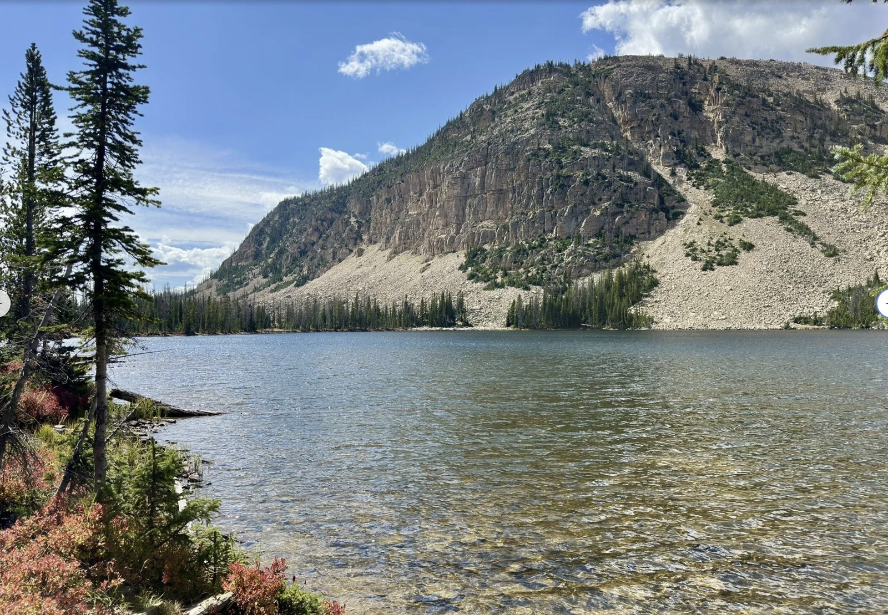
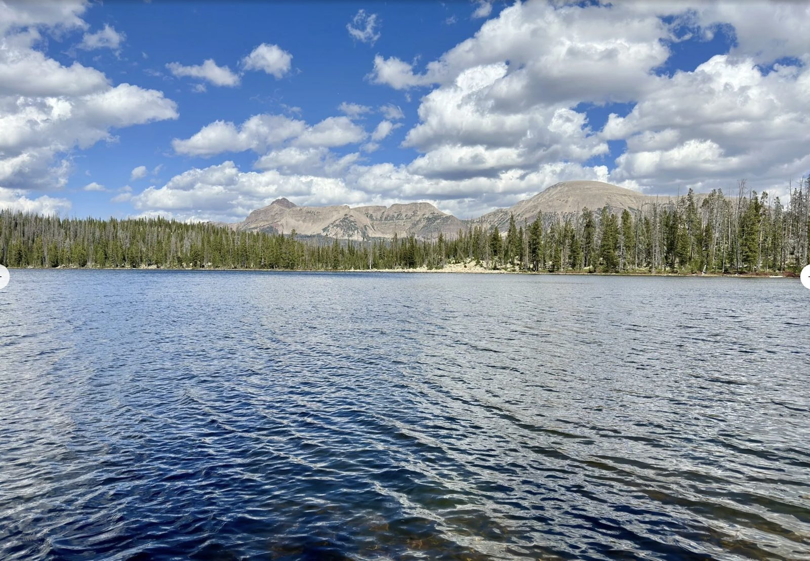
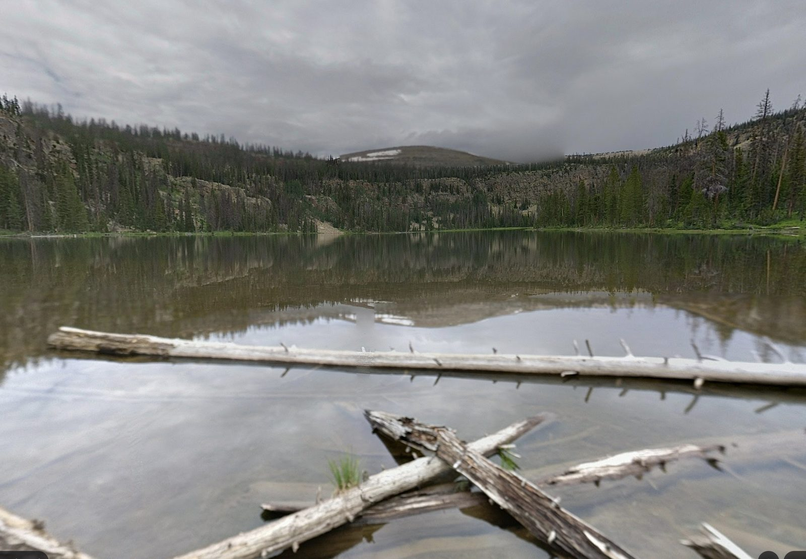

The Camp
Echo Lake — High Uintas Wilderness, Uinta-Wasatch-Cache National Forest, Utah.



The Setting
Echo Lake sits at 9,740 ft elevation in a natural bowl created by Murdoch Mountain. Surrounded by thick conifer forest at the base of a talus slope. 18 acres of water, up to 44 ft deep. The lake earned its name from the echo that bounces between the rock walls.
The terrain makes for a great group camp: the basin contains the area so wandering boys naturally stay close. Multiple established campsites with spring water along the southeastern shore. Other small lakes nearby (Joan, Gem, Pyramid) if leaders want to take small groups exploring.
What's At Camp
💧 Water
Echo Lake itself + spring-fed creeks. Not potable — bring your filter or boil. Leaders carry backups.
🏕️ Sleeping
Established campsites with flat tent pads. Coordinate tent assignments among the YM. Bring a pad — the ground will be cold.
🍳 Cooking
Blackstone griddle (Jared) + Camp Chef stove (Tim) + backpacking stoves for survival night. Leaders run the kitchen. Boys help cook a couple of meals.
🛶 Lake
Paddle boards (3+), inflatable kayaks (2), inflatable boat (8–9 person). Swim freely. Water will be cold even in July.

🎣 Fishing
Brook trout (plenty) and golden trout (limited). Spawning visible in late May–June in the inlet/outlet. Utah fishing license required for age 12+.

🔥 Fire
Solo Stove on hand. Open campfires depending on Forest Service fire restrictions at the time. Leaders verify on arrival.
What's NOT At Camp
- Cell signal. None. Don't bother bringing your phone.
- Potable water. Bring filters or expect to boil.
- Showers / restrooms. The lake is the bathtub. Bring a small trowel and toilet paper.
- Trash service. Pack it in, pack it out. Trash goes in the trailer.
- Electricity. Battery banks if you need to charge something specific (camera, etc.).
The Weather to Plan For
Bear Country — Quick Read
The Uintas are black bear habitat. Cougars too, less common. Full protocol on Safety. Short version: no food in tents, ever. Food locked in Tim's enclosed trailer (if it makes the road) — otherwise stored far from camp or hung in a tree. Cooking area separated from sleeping area. Bear spray with the medical leader.